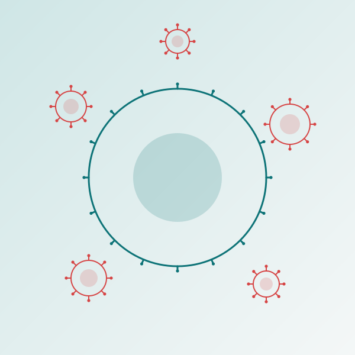

Everything you need to know about measles
From an ancient cattle plague to one of the most contagious diseases known — and the vaccine that nearly ended it. Six learning modules, quizzes, and an interactive timeline, grounded in CDC, WHO, and peer-reviewed science.

Six modules, one complete picture
Work through them in order or jump to what interests you. Your progress is saved on this device.
Module quizzes
Each quiz gives instant feedback and an explanation for every answer. Your best score is saved.
An interactive timeline of measles
Key events from the virus's ancient emergence through the outbreaks of today. Highlighted markers denote pivotal turning points.
My progress
Tracked privately in your browser — nothing is uploaded anywhere.
Why a measles learning guide?
Measles is both a cautionary tale and a public-health triumph. This open, free resource brings its full story together — the biology, the history, the numbers, and the science of the vaccine — in a form anyone can learn from.
The content is written for the educated general public and public-health students, and every module carries citations to primary sources — CDC, WHO, and the peer-reviewed literature. It is designed for self-paced learning: read the modules, test yourself with the quizzes, and explore how measles has shaped — and been shaped by — human society across 2,500 years.
Author
Created by Rene F. Najera, DrPH, an infectious-disease epidemiologist and educator. This project is part of an ongoing effort to make evidence-based public health accessible to everyone.
Sources
Primary sources are cited within each module and timeline entry. Key references include the CDC History of Measles, the WHO Measles Fact Sheet, Düx et al. (Science, 2020) on measles origins, and Mina et al. (Science, 2019) on immune amnesia.
Verify everything — download the full source list
Every claim across the six modules and the timeline is compiled into a single references handout — 30 unique sources with clickable, verifiable links, organized by module. It also documents the two points where reputable sources disagree, so you can judge the evidence yourself.
Download Sources & References (PDF)